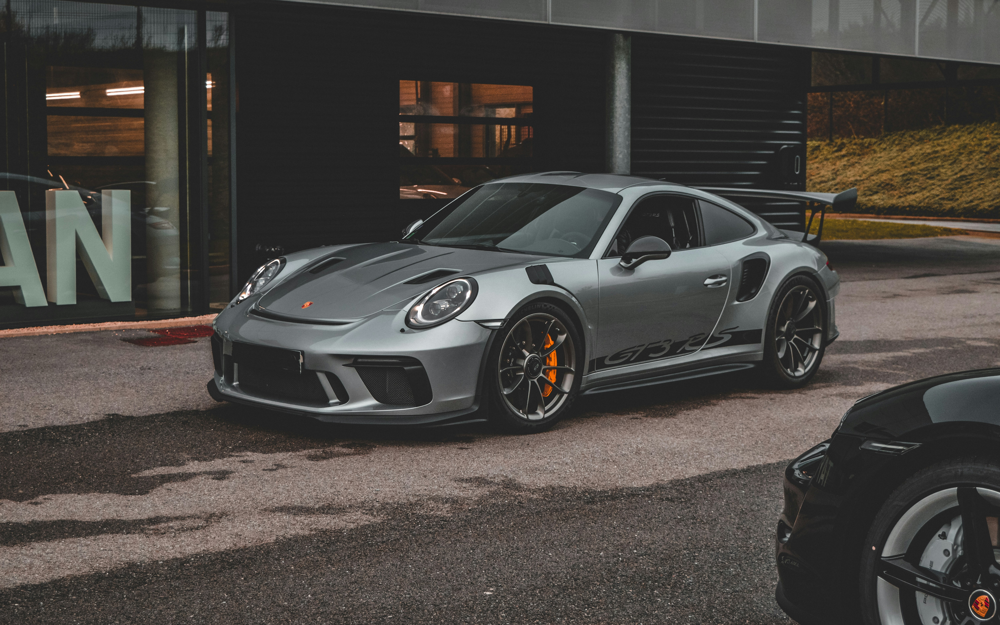

Audi Sport
Audi RS6
واحدة من أشهر سيارات Audi Sport، تجمع بين العملية والأداء الخارق.
واحدة من أشهر سيارات Audi Sport، تجمع بين العملية والأداء الخارق.

| المحرك | 4.0 لتر V8 توين تيربو + نظام هجين خفيف |
| عدد الأسطوانات | 8 |
| القوة | 630 حصان |
| عزم الدوران | 850 نيوتن متر |
| ناقل الحركة | 8 سرعات Tiptronic |
| نظام الدفع | quattro رباعي |
| التسارع (0-100) | 3.4 ثانية |
| السرعة القصوى | 305 كم/س |
| عدد المقاعد | 5 |
| نوع الوقود | بنزين |